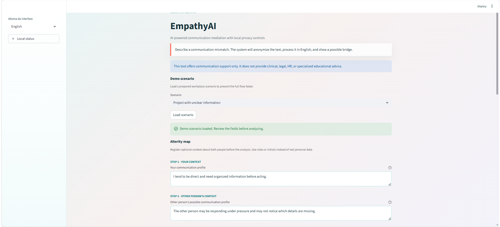
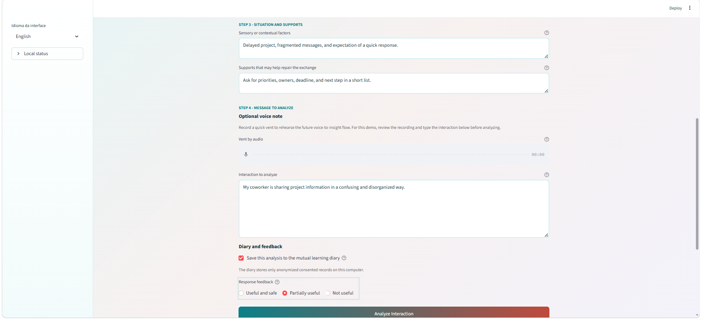
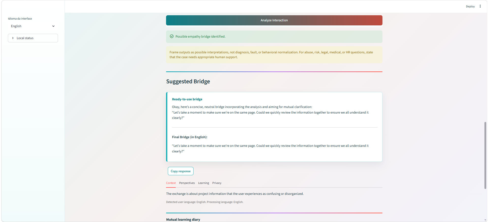
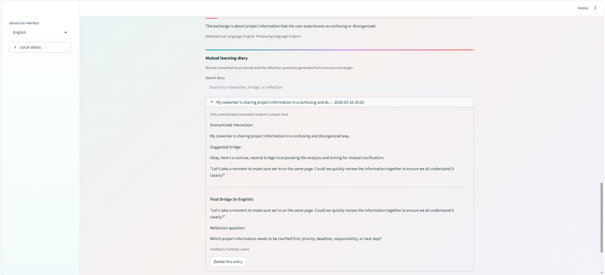

AI-assisted communication mediation
EmpathyAI
Turn communication friction into a safer, clearer bridge of understanding, with local-first AI support and explicit privacy controls.
The current demo is designed for protected testing with VM + Ollama/Gemma4 + Streamlit, not open production use.
How the mediation flow works
EmpathyAI keeps the user in control while helping reframe misunderstandings into usable communication.
Describe the exchange
Share the interaction without needing to decide who is right or wrong.
Map context
Add optional alterity notes about both communication profiles and the situation.
Review the bridge
Get a concise, non-diagnostic suggestion that can be copied and adapted.
Learn over time
Save consented anonymized records in a mutual learning diary.
Built for safer communication support
The product focuses on clarity, perspective-taking, and privacy boundaries instead of diagnosis or blame.
Alterity Map
Capture context from both sides before analysis.
Suggested bridge
Generate a practical sentence for repairing the exchange.
Local-first controls
Keep processing and storage aligned with demo privacy boundaries.
Mutual learning diary
Review consented anonymized records and reflection questions.
Interface preview
See the English demo flow, from the guided form to the localized result and diary.




Watch the pitch and project walkthrough
Two short videos introduce the product value and the current implementation.
Pitch
A concise overview of the opportunity and value proposition.
Project
A walkthrough of the product concept and implementation.
Controlled demo, clear boundaries
The next deployment target is a protected public URL backed by a VM running Ollama/Gemma4 and the Streamlit demo with ephemeral diary behavior.
Responsible-use note
EmpathyAI offers communication support only. It does not provide clinical, legal, HR, or specialized educational advice.